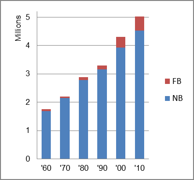

The foreign-born (FB) population increased from 59,881 in 1960 to 497,105 in 2010. That was an increase of 730.2 percent. The foreign-born share changed from 3.4 percent to 9.9 percent.
The share of the overall population that was native-born (NB) increased by 167.5 percent.
Colorado: Population 1960-2010 
The first chart below shows the three population change factors for three periods adjusted for annual average amounts. Domestic migration (NDM) was the largest factor adding population in the first period, replaced by B-D in the two most recent periods.
The second chart shows the same data but with an adjustment to reflect births to immigrants shifted to NIM. In it, the relative position of the three factors in adding population was unchanged.
Colorado: Sources of Population Change 1990-2013 Colorado: Sources of Population Change (Adjusted) 1990-2013
B-D NDM NIM B-D NDM NIM 90-'99 38.1% 53.3% 8.6% 90-'99 31.6% 53.3% 15.2% 00-'09 50.8% 29.3% 10.9% 00-'09 38.5% 29.3% 32.2% 10-'13 45.7% 42.5% 11.7% 10-'13 31.5% 42.5% 26.0%